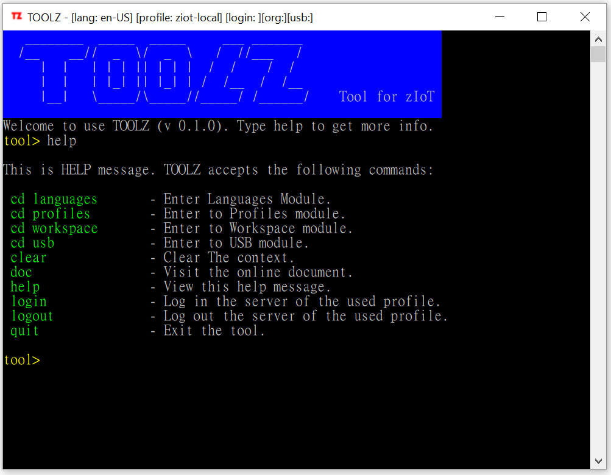
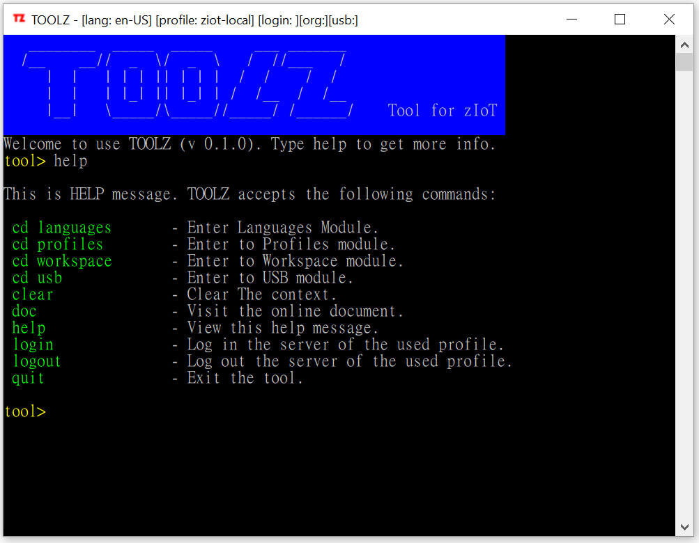

Toolz
2019-12-03
toolz 是一個支援 ZIOT 項目的小工具，作用是提供一個統一的工具來開發，測試，安裝及設定項目中使用的 Basebox 程式。 toolz 是一個以文字字串為主的命令列介面互動式的執行環境，執行上類似 Telnet。
________ _____ _____ ___ _______ /__ __// _ \/ _ \ / //___ / | | | | | || | | | / / / / | | | |_| || |_| | / /__ / /__ |__| \_____/\_____//_____/ /______/ Tool for ZIOT
我能使用 toolz 做什麼
你可以用 toolz 對 Basebox 完成下列工作
- 安裝程式
- 設定 WiFi 連線
- 註冊它在一個 ZIOT 組織中使用
- 監察運行時的訊息
- 執行你的腳本代碼
安裝
toolz 基本上是一個不用安裝的程式。但它執行的電腦上要先預備好 PowerShell ，USB Driver 和 與你電腦匹配的 micro USB 數據線 。目前只有在 Windows 10 測試過toolz ，建議你也在 Windows 10 上執行。
安裝前提 - PowerShell
- PowerShell: toolz 是以 PowerShell 開發的。對 PowerShell 版本要求在 5.1 或以上。
- 可以執行代碼
powershell $PSVersionTable.PSVersion檢查 PowerShell 版本。
安裝前提 - USB Driver
- USB Driver: toolz 與 MCU 的通訊大部是以 USB 進行，在 Windows 中我們使用 CH340 Windows Driver (驅動程式)。Winchihead (WCH) 江苏沁恒股份有限公司 負責 CH340 Driver 的維護。 參考此 WCH 管方網址 了解如何下載安裝。 或 參考 Thingpluse 網址的英文參考文件。
- 成功安裝後，可把 Device 接上 USB 端口，再開啟 Windows Device Manager ，在 Ports 節點中會看到類似的內容。

安裝前提 - micro USB 數據線
- 目前 Basebox 的所有型號均使用 micro USB 接口與電腦通訊。
- 按照你電腦的數據傳輸接口來配置相符的數據線。
- 注意部份 micro USB 線只是充電線，不能傳輸數據。
完成前提的檢查後，安裝 toolz 就只需把 TOOLZ.zip 檔解壓 (unzip) 後即完成。 如果你解壓到一個名為 toolz 的目錄 (也可以是其他名字)，打開 toolz 的目錄，會看到以下的目錄及檔案。
toolz\ ├ doc\ ├ locales\ ├ plugins\ ├ tool.exe ├ config.json

其他特性
介面支援多語言
 

支援在線檢查更新
toolz 可以在線去指定網庫尋找有沒有更新的版本可下載。
支援自定義預設指令 (Preset Command)
預設指令 (Preset Command) 與 toolz 的命令是不同的東西。預設指令的基本作用就是用簡單名稱來定義一些在 Basebox 上執行的小腳本。所以預設指令是在 usb 模組下運作。